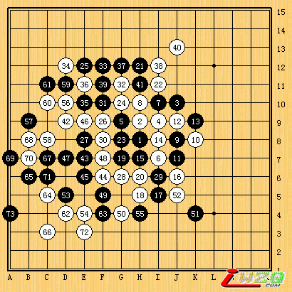

与顾婉卿的一盘心理战！
#1 与顾婉卿的一盘心理战！ 作者：有志青年 发表时间：2007-4-18 17:21:02
前天在网上闲着无聊，正是这段时间京沪擂台赛的热战时间，我试着去搜索一些关于棋手的资料，搜索到了上海连珠道场，进去聊了以后，发现群主就是这次京沪擂台赛的先锋顾婉卿。
出乎我的意料，当我提出跟阿婉下棋时，她毫不犹豫的同意了。于是我们在ORC开了局。

我执黑开疏星，她没换，至第9手是定式(5A=12)。黑10应该不是最强防，最强点应该是I10,不过高手就是高手，她总会下出你意想不到的招式，让你方寸大乱。计算力也会随此下降，11手防止6跟10在一起，并且自己做一个三。白12，黑13防。14做棋，弃到20，双方一直做棋，黑21跳三，22防于中间，25手，我25手在上方与21做成了一个大跳二，目的是在上方进行攻击，26防二，至32手大家混点，33跳三做杀，企图在右上方做杀（如白防于G4），白34挡住了我的跳三，并赌住了一个冲。黑35做棋，白36必防，37冲四，38应，39成三，做杀。此时40考虑后，应J13，绝对先手，黑必应，因此在F13形成了一个四四禁手，然后白不必要管黑棋上方（上方无杀），堵下面，以后至55手双方混战，此时双方已经耗完了正常的时间，进入读秒阶段，双方的心情都不好过，我想，和了吧，反正现在黑优，所以这时我提出，是否要和棋，阿碗不肯，她说防得很累，应该要杀几把，因此产生了白56，我看到这时如果让白在B9冲四的话，我后面的日子会很难过，因此，我先冲了四，然后再来防她的三。
然后自己形成了一个反三，白60应，自己形成一个叫四三，黑61防过后，黑稍优。
以下的日子真的很难受，67黑做杀，68必防，69跳四，70必应，71做杀，这时，小小顾并没有看到我以下有VCF，只是在E3点是做了一手棋。这里，很多朋友都发出来几个头痛一类、噔眼一类的表情。我当时也弄不明白，她居然没有看到以后的VCF，这应该是一个很简单的问题。
阿碗认输了，这盘棋是无意中赢来的，不过也是对我的一个考验，不光是技术上的考验，另一个是心理上的考验，我知道了，不管是段位棋手还是无段位棋手，只要用心去下，用心的去算，把对方当作朋友，你一定会在下棋中悟出人生的真缔的。